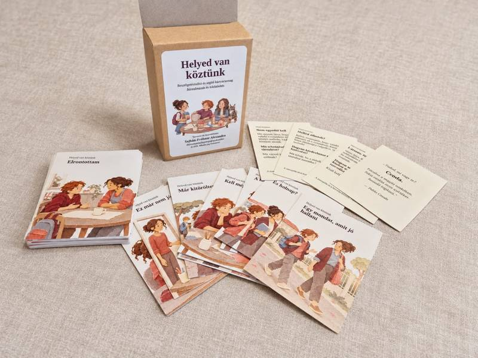

Amikor nehéz elindulni
Ha egy gyereket bántanak vagy kizárnak, sokszor éppen az első mondat hiányzik, amivel segítséget kérhet.

Valódi termékfotó.
Szakmailag jóváhagyott kiadvány
Előrendelhető e-mailben
A kiadvány nyelve: magyar
Beszélgetésindító kártyák bántalmazásról és kiközösítésről
A kiadványok magyar nyelven készültek. A más nyelvű ismertetők nem jelentenek lefordított nyomtatott kiadást.
Gyerekek, szülők, pedagógusok, biztonságos felnőttek
36 illusztrált, kétoldalas helyzetkártya hátoldali kérdésekkel. Külön nyomdai segédanyagként 16 részes segítő harmonika is készült; ez külön segítő anyagként készült.
Válasszatok egy lapot, beszélgessetek. Passzolni is szabad. Veszélyben valódi segítséget kell kérni.
Az előrendelési igényedet már most elküldheted e-mailben. A levél elküldése még nem visszaigazolt rendelés vagy lefoglalt példány. A pontos árat, a várható elérhetőséget és a feltételeket válaszlevélben egyeztetjük. A webshop készül.
Előrendelési igény küldéseItt nem történik fizetés. Bankkártyaadatokat ne küldj e-mailben.
Amikor nehéz beszélni
A bántásról, kiközösítésről és a segítségkérésről néha a legnehezebb az első mondat. A Helyed van köztünk arra ad alkalmat, hogy egy rajz, egy helyzet vagy egy kérdés mellett biztonságosan megkezdődhessen a beszélgetés.
Ha egy gyereket bántanak vagy kizárnak, sokszor éppen az első mondat hiányzik, amivel segítséget kérhet.
A 36 kétoldalas helyzetkártya rajzokkal és kérdésekkel teremti meg a beszélgetés kezdetét; a külön 16 részes segítő harmonika konkrét segítségkérő mondatokat ad.
A 36 kétoldalas, illusztrált kártya nem kész válaszokat osztogat. Megmutatnak ismerős és nehéz helyzeteket, a hátoldaluk pedig kérdésekkel segít elindulni. Gyerek és felnőtt együtt is választhat lapot; nincs jó vagy rossz felelet, és tovább lehet lépni, ha valamiről most nem szeretnének beszélni.
A témák a csúfolódástól és a kiközösítéstől az online bántáson és a testi határokon át a biztonságos felnőtt megkereséséig terjednek. A külön készült, 16 részes segítő harmonika konkrét segítségkérő mondatokat és gyermekvédelmi tájékozódási pontokat tartalmaz; külön nyomdai segédanyag, nem automatikusan a kártyacsomag része.
Ezt nem helyettesítő segítségnek, hanem a beszélgetés első kapaszkodójának szánom. Ha egy gyerek veszélyben van, fontosabb a közvetlen védelem és a megbízható felnőtt, mint bármelyik kártya kitöltése.
PRÓBÁLD KI · ÖT LAPBÓL EGY
Minden megnyitáskor az eredeti, 36 lapos csomag öt kiválasztott kártyája közül kapsz egyet. Az eredeti előoldal változatlan; megfordítva a történet és a két kérdés az oldal tipográfiájához igazodva olvasható.
Megnyitásonként egy véletlenszerű kártya. Nincs regisztráció, mentés vagy követés.
